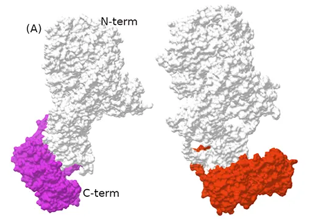

Laboratorio de Biofísica Teórica y Computacional
En LBTyC estudiamos proteinas desde una perspectiva física y computacional, combinando simulaciones moleculares, análisis de redes, y herramientas de inteligencia artificial. Buscamos comprender cómo la estructura y la dinámica molecular determinan la función biológica y utilizar ese conocimientio para abordar problemas de relevancia biomédica.

Novedades
La glicosilación modula la dinámica y la comunicación a larga distancia en proteínas
En un trabajo reciente estudiamos mediante simulaciones de dinámica molecular el efecto de la glicosilación sobre el receptor de manosa CD206. Nuestros resultados muestran que la eliminación de glicanos no produce únicamente cambios locales, sino que modifica la flexibilidad y el acoplamiento entre regiones distantes de la proteína, favoreciendo la aparición de una nueva conformación.
Este trabajo muestra cómo perturbaciones moleculares locales pueden propagarse a través de una proteína y modificar su comportamiento global, una de las preguntas centrales que abordamos desde la biofísica computacional.
Investigación
En el LBTyC estudiamos cómo funcionan las proteínas y otros sistemas biomoleculares desde un punto de vista físico. Buscamos comprender las relaciones entre estructura, dinámica y función mediante simulaciones moleculares, métodos de biofísica computacional e inteligencia artificial.
Nuestro trabajo combina investigación fundamental, orientada a comprender los principios físicos que gobiernan el comportamiento de los sistemas biomoleculares, con investigación aplicada, en la que utilizamos ese conocimiento para abordar problemas biomédicos y contribuir al diseño racional de nuevas estrategias terapéuticas.
En particular, actualmente estamos interesados en estos temas:
En cuanto a las herramientas que usamos, ellas son mayormente métodos teóricos y simulaciones moleculares computacionales.

Nuestro equipo
Si te interesa unirte al equipo, ponete en contacto con nosotros para obtener más información sobre las oportunidades disponibles y cómo puedes formar parte de nuestro equipo.
Donaciones
Si hallas la información/notas/software de estas páginas útiles, o si te interesa ayudar al estudio de los temas que investigamos, te sugerimos que consideres la posibilidad de hacer una donación (presionando en el boton «DONAR») para ayudar a desarrollar nuevas herramientas, o comprar nuevas y más potentes computadoras donde poder hacer nuestros cálculos. Muchas gracias!